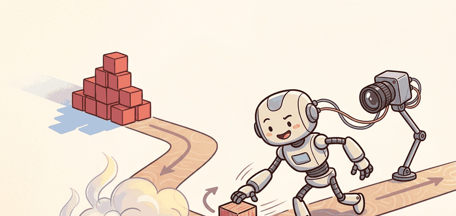

"The MDP you trained on and the world you deployed into are not the same problem. The gap between them is not a bug in the simulator; it is a bill the real world sends at inference time."
Section 20.1

This section assumes familiarity with Markov decision processes from section 2.6 and with physics simulator assumptions from section 6.3. The six gap types introduced here are addressed directly in section 20.2, which builds transfer strategies around each gap category. Domain randomization, one response to transition and contact mismatch, is treated in depth in section 13.2, and the visual observation gap is examined alongside sensor modeling in section 9.4.
A robot grasps objects flawlessly in simulation for ten million steps, then reaches the real lab and misses by two centimeters every time. The simulator was not wrong; it was just a different problem. This is the reality gap: the mismatch between the Markov decision process used for training and the physical process that receives the deployed policy. As robots enter uncontrolled environments today, closing this gap is the central engineering challenge separating lab demos from reliable deployment. You will learn to decompose the gap into six measurable mismatch types and use each one as a concrete diagnostic target.
For The reality gap revisited, sim-to-real transfer should name the randomized variables, simulator assumptions, real-world measurement, and demonstration-learning handoff in one transfer ledger.
This section turns the reality gap from a slogan into a set of measurable mismatches. The most common gaps are observation mismatch, transition mismatch, actuator mismatch, timing mismatch, contact mismatch, and evaluation mismatch. Each one creates a different debugging question. A policy trained for ten million simulator steps can fail its first real-world rollout because one interface changed enough to flip the action ranking, not because the entire model is wrong.
The key question is practical: when a policy succeeds in simulation and fails on hardware, which interface changed enough to invalidate the learned action? In practice, a friction coefficient shift from 0.6 in simulation to 0.35 on a real surface is enough to drop task success from 95% to under 30%, while every other simulator parameter remains identical.
A sim-to-real policy fails for a reason that can usually be localized. Treat "the reality gap" as a failure label only temporarily, then split it into sensor, dynamics, actuator, timing, contact, and metric gaps.
Theory
A useful formalization compares the simulator transition model $P_{\text{sim}}(s_{t+1}\mid s_t,a_t)$ with the hardware transition model $P_{\text{real}}(s_{t+1}\mid s_t,a_t)$. The policy never sees these distributions directly. It experiences them as different next observations, different rewards, and different safety margins after the same nominal action.
The gap is load-bearing when it changes the policy ranking: action $a_1$ looks better than action $a_2$ in simulation, but the ordering reverses on the robot. Small parameter errors matter most when they push the policy across a contact threshold, actuator limit, sensor blind spot, or termination condition.
The mechanism is a mismatch cascade. A camera pose estimate is late by two frames, the policy commands torque for the old pose, the motor clips the command, the contact model overestimates friction, and the evaluator counts a brief touch as success. The robot does not see five small errors. It sees one failed rollout.
Algorithm: Reality-Gap Localization via Paired Rollout Diagnosis
Input: simulator transition model $P_{\text{sim}}(s_{t+1}\mid s_t,a_t)$, hardware transition model $P_{\text{real}}(s_{t+1}\mid s_t,a_t)$, trained policy $\pi_\theta$ with parameters $\theta$, shared initial-condition family $\mathcal{S}_0$
Output: dominant gap label $g^* \in \{\text{observation, transition, actuator, timing, contact, evaluation}\}$ and a targeted repair recommendation
- Write the simulator contract: record state variables, observation noise $\sigma_o$, transition parameters, actuator model, contact coefficients $\mu$, and termination rule $\mathcal{T}$.
- Define paired trace fields $\mathcal{F} = \{s_t, a_t, o_t, \tau_t, r_t, \text{done}_t\}$ with identical schema in both simulation and on hardware; include timestamps to the millisecond.
- Sample a batch of initial conditions $s_0 \sim \mathcal{S}_0$ and execute $\pi_\theta$ in simulation, collecting trace $\mathcal{D}_{\text{sim}} = \{(s_t, a_t, o_t, \tau_t)\}_{t=0}^{T}$.
- Execute the same policy checkpoint $\pi_\theta$ on hardware from matching $s_0$ and collect $\mathcal{D}_{\text{real}}$ using the same trace schema.
- Compute per-field divergence $\delta_f = \mathbb{E}[|f_{\text{real}} - f_{\text{sim}}|]$ for each field $f \in \mathcal{F}$.
- Identify the first time step $t^*$ at which $\delta_f$ exceeds a task-specific threshold; assign $g^* \leftarrow \arg\max_f \delta_f(t^*)$.
- Verify isolation: perturb only the parameter governing $g^*$ (e.g., friction coefficient $\mu$, actuator delay $\Delta\tau$, or rendering noise $\sigma_o$) and rerun step 3. If the policy gradient $\nabla_\theta J$ changes sign for the perturbed parameter, the gap is confirmed.
- Apply the narrowest repair: correct $\mu$, add an action-delay buffer $\alpha$ steps, or adjust the observation noise model; avoid full domain randomization until targeted repairs are exhausted.
- Rerun paired rollouts from step 3 and confirm that $\delta_{g^*}$ drops below threshold before advancing to policy retraining.
- Log the final artifact: configuration, seed, metrics, timing traces, gap label $g^*$, repair applied, and post-repair $\delta_{g^*}$ side by side.
Worked Example
Code Fragment 20.1.1 below shows a tiny diagnostic for a pushing policy. It compares the same commanded push in simulation and on hardware, then labels the dominant gap instead of hiding the failure behind one success rate.
# Compare a simulated push with a hardware push using the same command.
# The gap label points to the interface that changed the rollout outcome.
sim_trace = {"slip_cm": 0.4, "settle_ms": 110, "success": True}
real_trace = {"slip_cm": 2.1, "settle_ms": 190, "success": False}
if real_trace["slip_cm"] - sim_trace["slip_cm"] > 1.0:
gap = "contact and friction"
elif real_trace["settle_ms"] - sim_trace["settle_ms"] > 50:
gap = "actuator delay"
else:
gap = "evaluation or observation"
print(f"sim_success={sim_trace['success']}, real_success={real_trace['success']}")
print(f"dominant_gap={gap}")slip_cm, settle_ms, and success under the same command. The important move is not the threshold itself, but the habit of storing enough trace fields to name the failure mechanism.Expected output: a useful reality-gap diagnostic reports the simulator outcome, the hardware outcome, and the suspected mismatch category. If the trace contains only final reward, the team cannot tell whether to fix sensing, dynamics, actuation, timing, or evaluation.
Use Gymnasium or Isaac Lab to enforce a common rollout schema, MuJoCo or Drake when explicit dynamics and contact assumptions must be inspected, and ROS 2 bags for hardware traces. The library shortcut is not "train and trust." It is "log the same fields in sim and real so the gap can be localized."
Practical Recipe
- Write the simulated MDP assumptions: state variables, observation noise, transition parameters, actuator model, contact model, and termination rule.
- Record the hardware interface with the same fields: sensor timestamps, command timestamps, controller status, measured motion, safety events, and success label.
- Run paired rollouts with the same initial condition family and the same commanded policy checkpoint.
- Label failures by the first interface that diverges enough to change the action outcome.
- Repair the narrowest mismatch first, then rerun the paired diagnostic before changing the policy architecture.
The common mistake is to treat sim-to-real as a single scalar transfer score. A high simulator reward can coexist with a wrong contact model, a delayed motor response, and an evaluator that rewards a state the hardware cannot safely reach.
Students often assume that a more physically accurate simulator will automatically close the reality gap, so the correct strategy is always to improve simulator fidelity. This is wrong in the embodied AI context because the gap is not a single fidelity deficit: it is the combined effect of mismatches in observation, actuation, timing, contact, and evaluation that interact inside a closed control loop. A simulator that perfectly models rigid-body dynamics can still fail on contact-rich tasks if the friction coefficients are miscalibrated, and adding visual realism does not help if the dominant gap is actuator delay. The correct mental model is a diagnostic one: identify which specific interface changed the action ranking between simulation and hardware, then apply the narrowest targeted repair to that interface before investing in broader fidelity improvements.
Contact mismatch dominates in tasks where the policy must regulate force: peg insertion, door opening, and object pivoting all depend on friction coefficients that simulators over-smooth. A policy that achieves 95% success in MuJoCo can drop to under 30% on hardware if the simulated coefficient of friction is 0.6 and the real surface is 0.35. Timing mismatch dominates in fast closed-loop tasks: a 20 ms control loop that becomes a 40 ms loop on an embedded controller can cause a balancing or catching policy to become unstable even when the dynamics model is otherwise accurate. Knowing which gap type matches the task class saves teams from applying domain randomization uniformly when a targeted fix, such as lowering the simulated friction range or adding an actuator delay wrapper, would close the gap in one iteration.
A mobile manipulator that opens a drawer may fail because the simulated hinge friction is too low. The fix is not automatically more domain randomization. The first fix is a paired trace that shows whether the gripper slipped, the wrist saturated, the drawer contact stuck, or the success detector fired too early.
When the reality gap revisited feels abstract, ask what would be different in the next frame of video, the next robot state, or the next safety margin.
Leading sim-to-real work now publishes per-gap measurement panels alongside task success rates. OpenAI's Dactyl hand published actuator position error histograms and tendon slip rates that isolated contact mismatch from timing mismatch across 100 hardware rollouts. ETH Zurich's ANYmal locomotion transfers include inertia identification runs that quantify how much the real robot's leg inertia deviates from the CAD model used in Isaac Lab, typically 8-15% in distal links, before domain randomization bounds are set. The shift is from "transfer score improved" to "here is the specific parameter that was wrong, the magnitude of error, and the perturbation experiment that confirmed it"; reviewers of top robotics venues now routinely reject sim-to-real papers that report only aggregate success rates without a gap attribution trace.
Pick one robot task and name the most likely observation gap, transition gap, actuator gap, timing gap, and evaluation gap. Which one would you test first, and what trace field would prove it?
The idea in this section becomes useful when it is tied to a closed-loop contract. For reality-gap work, the contract names the simulator assumptions, the hardware measurements, and the alignment rule that says two rollouts are comparable. Without that contract, a model can look capable in a notebook while failing the first time a sensor drops a frame or a controller saturates.
The graduate-level habit is to separate three claims. The modeling claim explains which part of $P_{\text{sim}}$ approximates $P_{\text{real}}$. The systems claim explains which observation, action, or timing interface exposes the approximation error. The evidence claim records which paired rollout would convince a skeptical builder.
The six gap types are not equally likely across task families. Observation gaps dominate in vision-driven tasks where rendered textures, lighting, and depth noise differ from real camera output. Transition gaps dominate in tasks that involve deformable objects, liquids, or complex rigid-body chains, because simulator physics engines simplify these most aggressively. Actuator gaps dominate in high-speed or high-torque tasks where the simulated motor model omits back-EMF, thermal derating, and current limits. Timing gaps dominate in any fast closed-loop task where the real controller introduces latency that the simulated step function does not model. Contact gaps dominate in tasks requiring precise force regulation. Evaluation gaps dominate whenever the success criterion in simulation captures a proxy state (object within 5 cm of goal) rather than the operationally correct state (object stable and graspable by the next agent in the pipeline). Evaluation mismatch matters in physical deployment because a policy optimized against the wrong success signal accumulates reward in simulation while consistently producing unsafe or unusable outcomes on hardware: a gripper that barely contacts an object at the goal position scores full reward in simulation yet leaves the object in a pose the downstream manipulator cannot grasp. The mechanism is reward hacking through the simulator's lax termination criterion. The simulator checks a scalar distance threshold at a single timestep, so the policy learns the minimum action needed to cross that threshold, not the sustained, stable configuration the real task requires. On hardware the same action satisfies the proxy threshold but fails every downstream check. Identifying which family a task belongs to before training is the fastest way to choose the right transfer strategy.
To catch timing mismatch before deploying to hardware, add an action-delay wrapper to your training environment: in MuJoCo set model.opt.timestep to your real controller period and apply a one-step action buffer so the policy sees lagged feedback; in Isaac Lab use action_delay_range in the environment config to randomize delay between 0 and 2 steps. If the policy collapses when delay is added in simulation, it will almost certainly collapse on the embedded controller before you ever plug in the robot. Fix the delay tolerance in sim first, then transfer.
| Tool or Library | Role in the Topic | Builder Advice |
|---|---|---|
| Gymnasium | Common rollout API | Use it to keep reset, step, reward, and termination semantics consistent across diagnostic environments. |
| Isaac Lab | Robot-learning simulation | Use it when the gap involves sensors, randomized assets, parallel rollout collection, or GPU-scale task panels. |
| ROS 2 bags | Hardware trace capture | Use them to align observations, commands, controller states, and safety events with simulator logs. |
| MuJoCo | Inspectible contact and dynamics | Use it when contact parameters, inertia, actuator limits, or control latency need explicit auditing. |
| Drake | System modeling and identification | Use it when the transfer question depends on calibrated dynamics, constraints, and state estimation. |
A robust implementation starts with a paired rollout schema. The schema should log inputs, outputs, units, timestamps, controller limits, termination reasons, and one failure label. The simulator and the robot must produce the same artifact shape, otherwise the comparison becomes a story assembled from separate experiments.
- Write a one-paragraph reality-gap contract with simulator assumptions and hardware measurements.
- Choose paired trace fields that can be captured in both places without manual interpretation.
- Run one deterministic smoke test and one perturbation test before scaling policy training.
- Save a single artifact containing configuration, seed, metrics, videos or state logs, timing traces, and failure labels.
- Compare repairs only when one script evaluates them on the same task panel and hardware protocol.
When a transfer attempt fails, avoid labeling the whole policy as weak. First assign the failure to observation, transition dynamics, contact, actuator delay, controller saturation, data coverage, or evaluation. Then rerun one controlled perturbation that isolates the suspected cause. This pattern turns a disappointing rollout into a reusable diagnostic asset.
For reality-gap studies, compare only construct-matched metrics that are co-computed in one pass on one configuration: same policy checkpoint, same initial-condition panel, same perturbation suite, same hardware protocol, and the same success definition. Save the result as one artifact with traces, summary statistics, videos or state logs, timing measurements, and failure labels so every number in a later table is backed by the same run.
The reality gap becomes useful engineering knowledge only after it is decomposed into measurable mismatches that a team can test, repair, and retest.
Choose a real robot task and write a paired trace schema with at least one observation field, one action field, one timing field, one safety field, and one suspected gap label.
What's Next?
This section turned the reality gap revisited into a testable embodied-learning contract: define the loop, choose the tool, save one comparable artifact, and diagnose failure by interface. Next, continue with Section 20.2, where the same evaluation habit carries into the next reinforcement-learning decision.
Demonstrates that training with randomized visual and physical parameters forces policies to learn features invariant to simulator appearance, enabling direct transfer to a physical robot without fine-tuning. Read to understand the gap between visual sim-to-real and dynamics sim-to-real; this paper focuses on the visual side.
This paper shows dynamics randomization for transferring learned control policies.
Kumar, A. et al. (2021). RMA: Rapid Motor Adaptation for Legged Robots. RSS.
Introduces RMA, which separates a base policy trained with full privileged state from a lightweight adaptation module trained online from proprioception only. Read Section 3 for the two-phase training procedure; RMA is one of the clearest demonstrations that explicit adaptation at inference time outperforms domain randomization alone for legged locomotion.
Tan, J. et al. (2018). Sim-to-Real: Learning Agile Locomotion for Quadruped Robots. RSS.
This work is a clear example of transferring locomotion policies from simulation to hardware.
NVIDIA Isaac Lab documentation.
NVIDIA's GPU-accelerated robot learning framework that runs thousands of parallel environments on a single GPU. Read the documentation for task configuration, domain randomization APIs, and the sim-to-real export path; massively parallel training with Isaac Lab is how locomotion and dexterous manipulation policies achieve the sample counts needed for sim-to-real transfer.
Drake is relevant when transfer work needs explicit dynamics, constraints, and system identification.